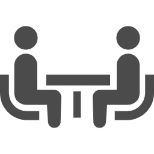
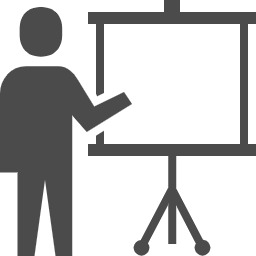

「跡継ぎは良いね」
と言われたことはありませんか？
「跡継ぎは良いね」
なんて言われることも多いですが、実際に親から事業を継承された皆さん
こんなはずではなかった・・・
なんで私が・・・
どうして親は分かってくれないのか・・・
などと思ったことはありませんか？
自分一人で悩み、頭で考えているだけでは会社は改革できません。
やりたいことを明確にし、実現するための行動が何よりも大切です。
今何をするのか？何のためにやっているのか？を明確にし、
現状の悩みの解決方法を一緒に模索し解決していきましょう。

ご挨拶
はじめまして。
竹口久嗣と申します。
私は、創業1716年、300年以上続く和菓子屋の長男として生まれました。
小学生の頃には父の後を継いで和菓子職人になることを決め、迷うことなく東京製菓学校に入学。
卒業後は大阪の人気店で修業し、その後両親の経営する会社へ入社しました。
そして私は入社初日から会社の現状に衝撃を受けることとなります。
当たり前の挨拶ができない、従業員のやる気が全くない、お菓子に対しての想いがない、接客サービスがまるでなっていない…
このままではいつ会社が潰れてもしょうがない。
まさにそんな状況でした。
そこからの数年は地獄のような日々でしたが、地道に一つずつ改善と改革を繰り返し、新しい組織作りに成功しました。
「トップが変われば会社が変わる」
と言う言葉がありますが、事実、覚悟を決めて改革を進めたことにより、見違えるように会社は変わりました。
しかし、それには絶対にブレない心、やりきる強い意志、そして何よりも行動力が必要です。
中途半端な気持ちでは会社の改革はできません。
とはいえ、1人だと心が折れたり、周りの環境に流されたり、会社内からの反発など、思うように改革が進まないことがほとんどです。
だからこそ、一人で悩まず、共に切磋琢磨しながら成長できる仲間が必要だと痛感しています。
変化の大きい昨今、今改革を始めなければ、ますます会社は大変になり、手の付けようがなくなります。
本気で会社を改革したい方、現在奮闘中の方、諦めずに前を向いて一緒に行動していきませんか？
弊社もまだまだこれからであり、より良い組織、環境を作るために奮闘中です。
一緒に頑張っていきましょう！
事業承継
事業継承には本当に沢山の悩みがあります。
先代から受け継いだ会社だからこそ、 親や従業員との対立はもちろん、
改革しようとしてもうまくいかない。
何から手を付ければいいか分からない。
どうしてうまくいかないか分からない。
相談できる人がいない…など、
悩みは尽きません。
第三者のチカラがあれば
あれほど苦しまなかったのに…
実は私も事業継承に悩まされた1人です。
「おはよう」「おつかれさま」の挨拶すらなく
片付けもしないで勝手に帰宅する従業員達。
洗い物は残ったまま
材料は出しっぱなし、
清掃も行き届いていない
会社に愛情を持って働いてくれている人の少なさ…
激しい憤りと同時に
このままだと会社がいつ潰れてもおかしくないという大きな危機感を覚え
そこから格闘の日々が始まります。
ヒト、モノ、カネを動かす難しさはもちろん
事業継承の本当の意味での難しさを痛感することになりました。
両親との衝突、従業員との対立
従業員が一斉に辞めたり、資金が底をついたこともあります。
様々な葛藤や苦労がありましたが
それから9年の月日が流れ
人が変わり、組織も変わり、人気商品も増え
会社は大きく変わりました。
そしてついに、万年赤字が出ていた会社は
黒字を出せるようになりました。
親と子の事業継承の難しさは体験した者にしか分かりません。
実際に体験したことのないコンサルタントによるアドバイスや
机上の空論だけではどうすることもできません。
だからこそ私の経験を活かし
同じ環境で悩まれている方のお力になりたいとの思いで
このサービスを立ち上げました。
事業継承コーチングサポートでは
単に数字だけを見てアドバイスをするのではなく
後を継ぐ経営者の方が考えている未来を聞いて
それを具現化する為の施策を一緒に考え
一歩一歩前を向いて進むことができるようサポートしていきます。
自分一人で悩み、頭で考えているだけでは会社は改革できません。
やりたいことを明確にし、実現するための行動が何よりも大切です。
今何をするのか？何のためにやっているのか？を明確にし
現状の悩みの解決方法を一緒に模索し解決していきましょう。
会社の改革は短期間でできるものではありません。
当サービスでは3年から5年を目途に経営状態を改善し
その後自立して会社経営を行って頂くことを目指しています。
(株) 兆久 代表取締役
竹口 久嗣
実績
・ブランド”It Wokashi“の立ち上げ
・”さわってつくってたべる絵本”の共同開発
・ブランド”ANCO.”の立ち上げ
・フルーツ大福専門店の監修
サポート内容
ZOOMでのお打合せ
月2回（2週間に1回）のZOOMでの打ち合わせ。
（問題、相談、進捗、ご提案など）
※時と場合により現地でのお打ち合わせにすることもあります。
LINEでのサポート
LINEでの悩み相談
※一社一社と深く関わらせて頂きたいので
お申し込みの締め切り枠を設けております。
満席の際はお断りさせて頂くことがありますので、どうぞご了承くださいませ。
申込みの流れ
１.
お問い合わせ
まずは下記よりお気軽にお問合せください。
お問い合わせはこちら
２.
面談
Zoomを使いお悩みや問題点等、軽い面談を行います。
３.
プログラム作成
お悩みに合わせたサポートプログラムを作成。